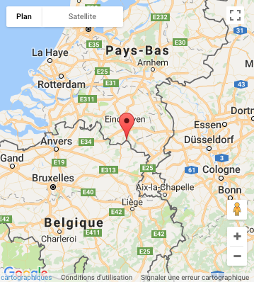

Historique
Les bières d'Achel sont des bières trappistes. Elles sont issues de l'abbaye Sint-Benedictus à Achel dans le Limbourg, tout près de la frontière hollandaise. Pour la petite histoire, sachez que cette abbaye a été fondée en 1846 par les moines trappistes de Westmalle.
En 1914, le brassage de la bière prit fin. Mais depuis 1998, on peut de nouveau déguster à Achel une authentique bière trappiste, fabriquée dans la brasserie de l'Abbaye d'Achel. Le frère brasseur, qui continue à travailler selon la recette du Frère Thomas, se porte garant de la qualité de la bière devenue réputée.
Il est intéressant de dire aussi que le Frère Thomas, responsable de la brasserie, a déjà travaillé pour le compte des brasseries de Westmalle, Westvleteren et Orval.
Types de bières et leurs caractéristiques
Depuis 2003, la production de la bière trappiste « Achel » se décline en 6 variétés :
- une brune pression, titrant 5 %
- une blonde pression, titrant 5 %
- l'Achel blonde, une triple légèrement ambrée refermentée en bouteille, titrant 8 % d'alcool
- l'Achel brune, titrant 8 % d'alcool
- l'Achel extra brune, titrant 9,5 % d'alcool
- l'Achel extra blonde, titrant 9,5 % d'alcool
Ces deux dernières sont brassées occasionnellement et commercialisées en bouteilles de 75 cl.
Fabrication
L'Achel fait partit des recettes de frère Thomas, dont les talents de brasseur avaient déjà fait les beaux jours de Westmalle, Westvleteren et Orval. L’homme avait les idées claires : il voulait composer à Achel une bière de qualité, faite d’orge, de houblon, de levure et d’eau, sans substances aromatiques ni sucres ajoutés.
Localisation
|  |
|